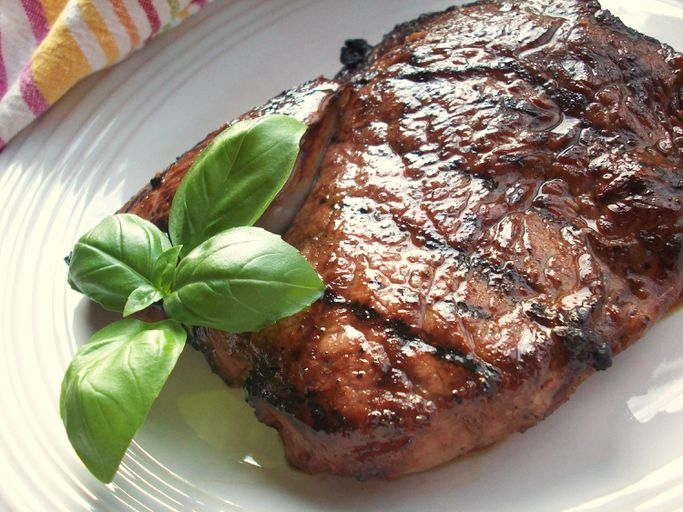

Description
Ingredients
- 2 (1/2 pound) rib-eye steaks
- ½ cup balsamic vinegar
- ¼ cup soy sauce
- 3 tablespoons minced garlic
- 2 tablespoons honey
- 2 tablespoons olive oil
- 2 teaspoons ground black pepper
- 1 teaspoon Worcestershire sauce
- 1 teaspoon onion powder
- ½ teaspoon salt
- ½ teaspoon liquid smoke flavoring
- 1 pinch cayenne pepper
Steps
- Place steaks in a shallow glass dish; set aside.
- Mix together vinegar, soy sauce, garlic, honey, olive oil, black pepper, Worcestershire sauce, onion powder, salt, liquid smoke, and cayenne pepper in a medium bowl until marinade is well combined. Pour over steaks and turn to coat; rub marinade into meat for optimum flavor. Cover and marinate in the refrigerator for 1 to 2 days.
- Preheat the grill for medium-high to high heat. Lightly oil the grill grate.
- Cook steaks on the preheated grill until hot, slightly firm, and lightly pink in the center, about 7 minutes per side. An instant-read thermometer inserted into the center should read 140 degrees F (60 degrees C) for medium. Discard leftover marinade.